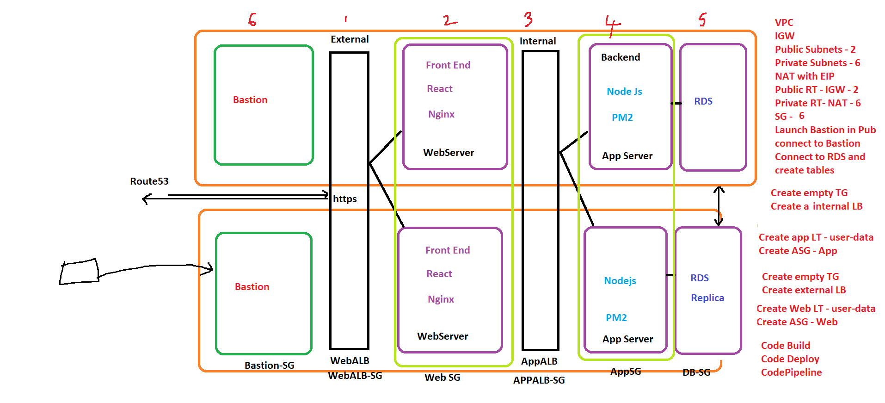
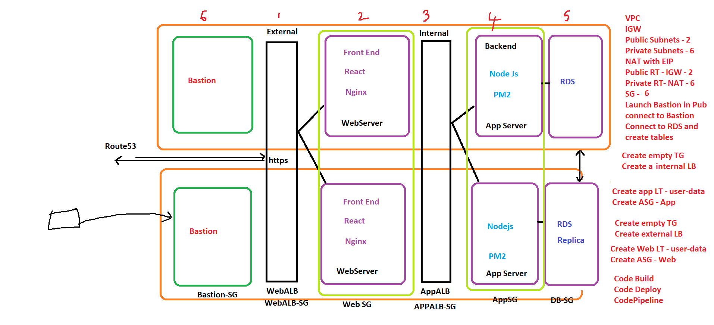
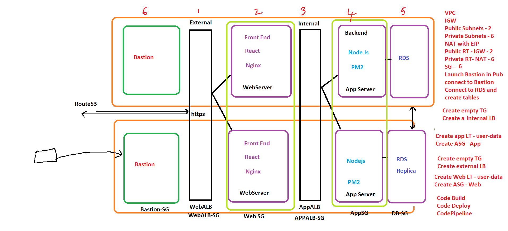

AWS & DevOps Architecture Designs
 



Designing Scalable Cloud Infrastructure & Automated CI/CD Pipelines
Cloud-focused DevOps Engineer with hands-on experience in AWS infrastructure, automation, containerization, and CI/CD pipelines. Passionate about scalable, secure, and highly available cloud systems.
AWS
Docker
Kubernetes
Terraform
CI/CD
Marven / Jenkins
Ansible
Prometheus / Grafana
Bash Shell / Python
S3 + CloudFront secure hosting
GitHub Actions → EC2 deployment
Automated AWS provisioning
Two Tier application frontend deployed Flask and backend Mysql Database in Kubernetes And EKS/EC2 in aws

Email: sharma_khushminder@yahoo.com
LinkedIn: linkedin.com/in/sharma_khushminder@yahoo.com
GitHub: github.com/Khushmindersharma